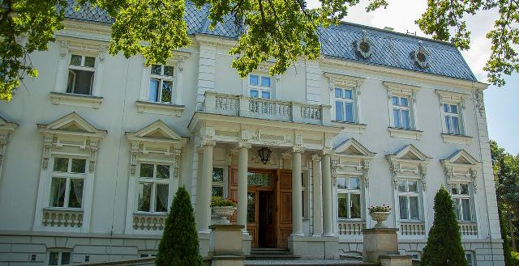

Powrót do strony głównej
Cały ja
imię: Kleofas
nazwisko: Słuszny
miejsce zamieszkania: Błądzigłowy
Urodziłem się na początku XXI wieku. Wszyscy mówią, że to wiek szlony. Uwaźnie obserwuję otaczający świat i coraz częściej dochodzę do wniosku, że trudno zaprzeczyć tej opinii. Jaki będzieświat za 100 lat? Niestety tego nie wiem. Chciałbym jednak uczestniczyć w jego kształtowaniu. Myślę, że najważniejszą informacją o mnie będzie ta, ze ponad wszystko cenię sobie spokój.

(jeszcze o mnie usłyszycie)
wasz Kleo
Powrót do strony głównej